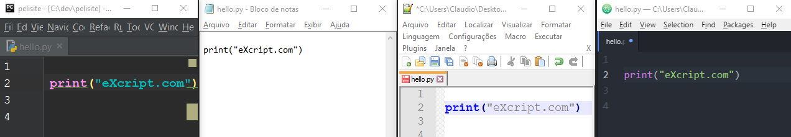
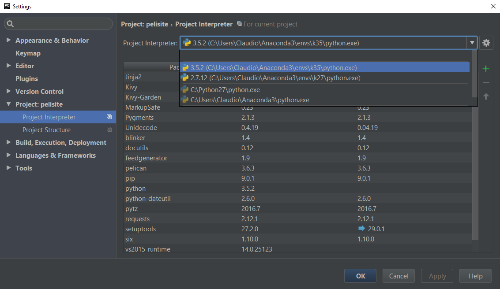
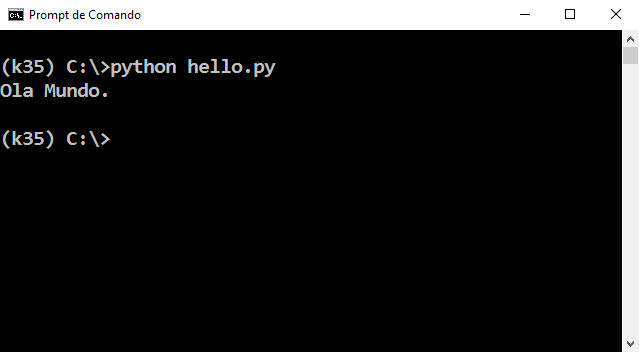
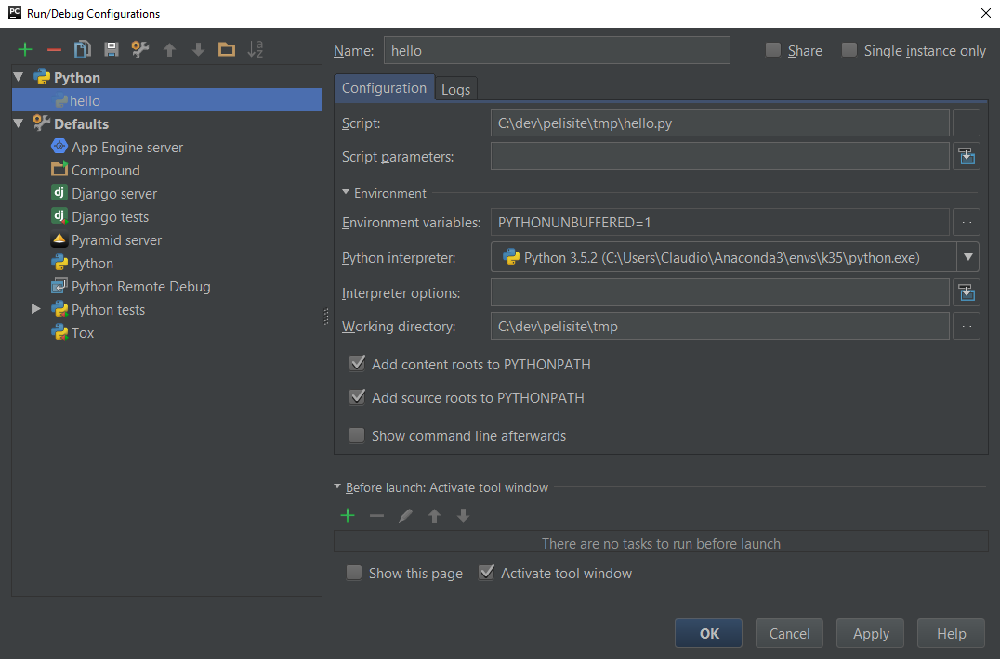
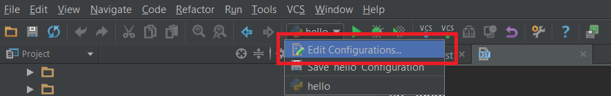

|
Nesta aula estudaremos como funcionam as IDE e como o PyCharm e o Python estão interligados. |
INTRODUÇÃO
As IDE's (Integrated Development Environment) são programas de computador desenhados para auxiliar os programadores na construção de softwares. Atualmente há centenas de IDE's no mercado, tanto gratuitas como também pagas.
É comum e recorrente os iniciantes confundirem a linguagem de programação com a IDE de desenvolvimento, por exemplo, é comum encontrar em fóruns pessoas se referindo a IDE, enquanto desejam falar da linguagem ou então do interpretador.
Um exemplo atual e notável é o desenvolvimento de aplicações nativas com a IDE AndroidStudio na qual é utilizado a linguagem Java.
O desenvolvimento que é considerado nativo para Android é feito com uso da linguagem Java. Atualmente a IDE disponibilizada para a construção de Apps é o AndroidStudio e o interpretador da linguagem Java que foi desenvolvido pela Google é o Dalvik.
Mesmo assim, é comum ler comentários de iniciantes afirmando haver problema num determinado código utilizando o AndroidStudio. A questão é a seguinte: o AndroidStudio não é responsável por examinar o código, portanto, dizer que o erro ocorre utilizando o AndroidStudio não possui lógica . O que realmente está acontecendo é que o interpretador, que no caso é o Dalvik, ao ler o código desse usuário detecta um problema e retorna uma mensagem de erro. Essa mensagem é capturada pela IDE (AndroidStudio) e este irá exibir para o usuário. Por essa razão parece que é o AndroidStudio é quem diz haver problemas com o código, mas devemos lembrar que o mesmo está chamando o interpretador e passando como parâmetro o nosso código. Portanto, o correto é dizer que um determinado código Java voltado para Android está exibindo a mensagem X, Y, Z informando um determinado erro.
O mesmo ocorre com o Python! Seja com a linguagem Java ou Python é possível a construção de aplicações com qualquer editor de texto e em qualquer sistema operacional, até porque, indiferente do local, estaremos sempre utilizando a linguagem Python, ou então Java. Logo, é comum lermos em fóruns usuários se queixando que determinado código Python não está executando no PyCharm, o que não possui sentido.
O funcionamento do Python se dá de forma análoga ao que temos com o Java. Existe um interpretador, o usuário utiliza uma IDE e todas as vezes que o usuário desejar executar o código, a IDE passará os arquivo como argumento para o interpretador, este irá analisar o código, caso encontre algum erro, retornará para a IDE PyCharm e então, o editor mostrará a mensagem de erro. Novamente, quem está acusando um erro não é a IDE, e sim o interpretador do Python e portanto, dizer que o PyCharm não está rodando determinado código não possui qualquer sentido!
Na imagem acima estamos escrevendo um mesmo programa em 4 editores de texto diferentes. Neste momento, não há diferença entre os vários editores, até porque, todos irão salvar o que é digitado no arquivo hello.py. Então, a diferença, é que no primeiro editor, que no caso, é uma IDE, o PyCharm, nós podemos configurar uma versão do interpretador do Python e executar o nosso código facilmente.
EDITORES DE TEXTO
Toda IDE é, antes de mais nada, um editor de texto. É importante não confundir Professadores de Texto com Editores de Texto! O Microsoft Word e o BrOffice são processadores de texto, ou seja, podemos criar textos e definir opções de como este texto será exibido, como tamanho, cor e fonte.
Editores de Texto não permitem alterar a formatação do texto, ou seja, os mesmos podem até colorir palavras, porém, quando salvarmos os documentos, teremo um arquivo que contém somente texto.
AMBIENTE DE DESENVOLVIMENTO INTEGRADO
A principal funcionalidade que toda IDE possui é a capacidade de escrevermos e executarmos código-fonte através de itens de Menu ou teclas de atalho. Portanto, todo editor de texto que permita executar código é um editor de texto que possui recursos adicionais.
Atualmente, para um editor de texto ser chamado de IDE são necessários muitos outros recursos, como por exemplo, a capacidade e facilidade para depurarmos código.
PyCharm E O PYTHON
O PyCharm permite que a gente defina vários interpretadores do Python. Pra isso, temos de ir nas configurações da IDE e em seguida, clicar na opção: Project -> Project Interpreter. Nesta tela será exibido todos as versões dos interpretadores Python que o PyCharm conhece.
Quando mandarmos executar um código Python, o PyCharm irá utilizar o interpretador que nós selecionamos na lista de interpretadores e enviará o nome do arquivo para o interpretador.
Observe que o processo entre executarmos o código pelo Terminal e pelo PyCharm, no final das contas é o mesmo, até porque, de ambas formas, estaremos enviando o nome do arquivo para um interpretador Python!
Na imagem a seguir podemos ver o arquivo de nome hello.py sendo enviado para o interpretador Python utilizando o cmd do Microsoft Windows.
UMA IDE VÁRIOS INTERPRETADORES
Atualmente, o desenvolvimento de aplicações geralmente obriga-nos a utilizar várias versões do interpretador Python. Por essa razão, as IDEs precisaram se adequar a essa realidade.
O PyCharm permite-nos definir vários interpretadores num mesmo projeto, como a imagem acima, onde foi exibido a janela Settings do PyCharm demonstrou. Porém, também é possível definir que um mesmo código possa facilmente ser executado em vários interpretadores e eis que começa a confusão!
Toda as vezes que executarmos um código Python o PyCharm irá definir as configurações de como ocorrerá a execução. Observe que estamos falando da configuração de como determinado arquivo será executado!
Na imagem a seguir temos a tela Run/Debug Configuration e nesta podemos ver, na lista ao lado esquerdo, que o arquivo hello.py aparece. Isso significa que já mandamos executar este código e portanto, o PyCharm criou, automaticamente, as configurações de como a execução deveria ocorrer.
Essa configuração é definida automaticamente pela IDE, porém, podemos alterar a forma como um arquivo será executado, basta somente definirmos isso na tela Run/Debug Configuration.
Para acessarmos essas configurações, temos que utilizar a barra de ferramentas principal do PyCharm, conforme podemos ver na imagem a seguir.
CONCLUSÃO
O PyCharm permite a gente definir vários interpretadores com diferentes configurações de execução, e podemos fazer isso na tela Run/Debug Configuration.
Essa é a grande diferença entre as IDEs modernas e as IDEs antigas, a capacidade de trabalhar com vários interpretadores de uma mesma linguagem porém, com versões diferentes.
Tags curso, ide, pycharm, jetbrains, python, blog
Comentários
comments powered by Disqus